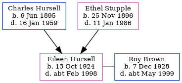

Eileen Frances Brown (née Hursell) 1924 - c1998
[ Home ] | [ Calendar ] | [ Surnames Index ] | [ Family History ]The younger of 2 children of Charles Hursell (a railroad engine-driver) and Ethel Stupple, Eileen Hursell, the third cousin once-removed on the mother's side of Nigel Horne, was born in Faversham, Kent, England on Oct 13, 19241,2,3. She was married to Roy Percival Brown. On Sep 29, 1939, she lived at Station House Cottage, Wye, Kent, England1.
She died c. Feb 1998 in Ashford, Kent3.
Parents
- Charles Ernest was born on Jun 9, 1895
- Ethel Mary Alice was born on Nov 25, 1896
Citations
- 1939 Register - Findmypast (was recorded at this address)
- England & Wales births 1837-2006 - Findmypast
- England & Wales deaths 1837-2007 - Findmypast
Media
England & Wales births 1837-2006 - BMD/B/1924/4/AZ/000616/090
1939 Register - TNA/R39/1817/1817D/019/02
England & Wales deaths 1837-2007 - BMD/D/1998/2/82384747
Family Tree
Generated by Ged2Site. Last updated on Jul 20, 2025